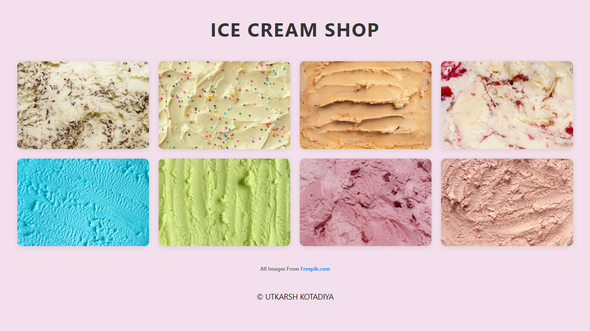
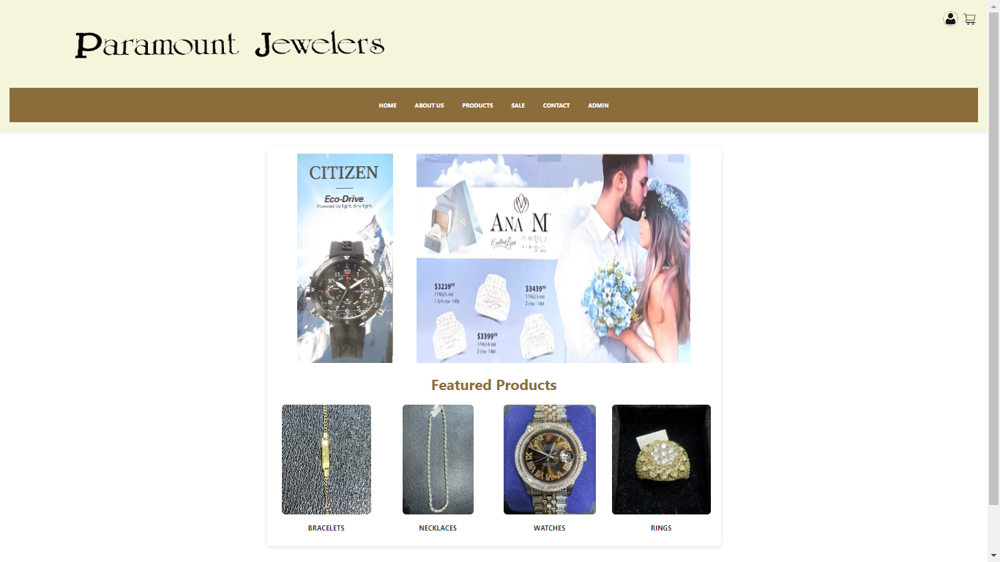

Utkarsh Kotadiya
CSCE 242: Client-Server Computing
Assignments
Assignment 1: Basic HTML

This assignment inclues application of basic HTML such as paragraphs, different headings, tables, links, and images.
Assignment 2: Basic CSS
Here, use of different CSS styles is shown, such as background/text colors, background images and other basic CSS functions.
Assignment 3: Page Layout

This assignment showcases the use of flexboxes to ensure that the website remains visually appealing when switching to different resolutions, such as when going from a computer to a mobile device.
Assignment 4: Recreating a CSS Page

The goal of this assignment was to use knowledge of CSS & HTML to recreate an existing website as accurate as possible.
Assignment 5: Javascript Intro
The goal of this assignment was to apply basic Javascript functions/elements.
Assignment 6: Conditionals

This assignment utlizes if-statements in Javascript, and other HTML/CSS/JavaScript features to create two distinct activities that the user can do.
Assignment 7: For Loops
For Loops, in combination with other HTML/CSS/Javascript elements, are used to create an interactive excercise for the user to do by creating any given number of stars and being able to see what star number they've clicked on.
Assignment 8: Arrays
Using JavaScript Arrays, this assignment creates a group of interactive images, which the user can click to see certain prompted messages.
Assignment 9: Classes
Using Classes, this webpage has different interactive modal boxes for different species of birds, which the user can click to see more information on the birds, created through an array of classes.
Assignment 10: JSON
Using JSON file parsing, this website creates an "ice cream shop" that includes an image of the flavor with the corresponding name; no HTML is used to make the different sections, instead all elements are added through Javascript.
Project Work
Part 1: Project Proposal
This is a initial proposal for the project site: Paramount Jewelers (store website)
Part 2: Wireframe
This is a MockItt of the plan for the actual website, which includes rough drafts of each webpage on the site.
Part 3: HTML/CSS Implementation
This is a HTML/CSS initial creation of the actual website, which includes rough drafts of each webpage on the site.
Part 4: Images & Colors

This version includes updates with pictures, images, and text added to the project site: Paramount Jewelers (store website)
Part 5: Site Improvements
Improvements to the site with many structural and layout improvements that include neater layouts, more professional styling, colors, and interactive elements.